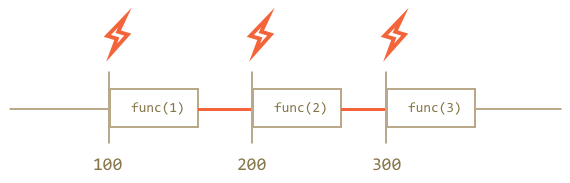
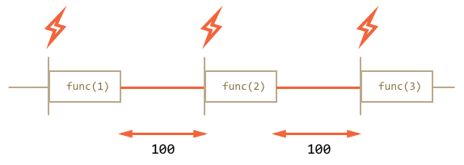

setTimeout -- выполнить код с указанной задержкой.
setInterval -- бесконечно повторять код через указанные промежутки времени.
setTimeout:
var timerId = setTimeout(func / code, delay[, arg1, arg2...])
Параметры:
func/code
Функция или строка кода для исполнения. Строка поддерживается для совместимости, использовать её не рекомендуется.
delay
Задержка в миллисекундах, 1000 миллисекунд равны 1 секунде.
arg1, arg2…
Аргументы, которые нужно передать функции. Не поддерживаются в IE9-.
Пример:
setTimeout(function func() {
alert( 'Привет' );
}, 1000);
Функция возвращает числовой идентификатор таймера, который можно использовать для отмены действия:
var timerId = setTimeout(...);
clearTimeout(timerId);
setInterval:
var timerId = setInterval(func / code, delay[, arg1, arg2...])
Отменить действие можно при помощи функции clearInterval.
Пример:
// начать повторы с интервалом 2 сек
var timerId = setInterval(function() {
alert( "тик" );
}, 2000);
// через 5 сек остановить повторы
setTimeout(function() {
clearInterval(timerId);
alert( 'стоп' );
}, 5000);
Рекурсивное использование setTimeout как альтернатива setInterval:
Рекурсивный setTimeout -- это более гибкий метод тайминга, чем setInterval, так как время до следующего выполнения можно запланировать по-разному, в зависимости от результатов текущего.
Рекурсивный setTimeout гарантирует паузу между вызовами, а setInterval -- нет.
/** вместо:
var timerId = setInterval(function() {
alert( "тик" );
}, 2000);
*/
var timerId = setTimeout(function tick() {
alert( "тик" );
timerId = setTimeout(tick, 2000);
}, 2000);
setInterval:

setTimeout:
